Race screen — 2026-11-10 · updated 14:32
M2 P&L −£4.000 won, 2 lost · 4 to run · 1 not backed (price outside 3.5–8) · 1 non-runner
£2 per M2 priced 3.5–8 at the off (BSP; SP until BSP comes in next morning) · loser −£2 · winner £2 × (BSP − 1) less 5% commission
Order: each race is in market order (shortest forecast price first). A gold
◆ 1/2/3 marks your data model's top 3 — a gold pick at a
longer price is where your data disagrees with the market (a value spot for your eye).
Badges by the name: M2 Market #2 — 2nd favourite in the morning forecast, qualifying race; back only if the live price is 3.5–8.0 ★ EYE finished last run strongly (+score) ⚠ hard trk easy→hard track step-up (−score) ▼ easy trk recently placed at much tougher track (+score) ⚠ draw badly drawn here (−score) ⚠ pace run-style fights the course pace bias (−score) ⚠ ground has tried this going but never placed on it (−score) ▼ cls dropping in class today (+score) ▲ cls rising in class today (−score) ▼ in money in vs opening show ▲ drift drifting vs opening show ⚠ 2 runs / IRE form too little / foreign form to read.
OR column: ↑ green arrow = BHA rating rising (improving horse); ↓ orange = rating falling. TF column: Timeform stars 1–5 (★★★★★ = top rated).
Suit column: going✓ / trip✓ / trk✓ (track toughness) / draw✓ (well drawn).
Rest: green Crse = won there; yellow comment = trouble in running; greyed = novice/bumper or non-handicap 5–6f sprint (left out of the tally — handicap sprints now shown at full opacity). Res fills in after racing (winner green; ✓ = winner came from the top-3 market rows, ◆ = one of your gold data picks won); Spd is a rough home figure; BSP fills in the next morning.
Badges by the name: M2 Market #2 — 2nd favourite in the morning forecast, qualifying race; back only if the live price is 3.5–8.0 ★ EYE finished last run strongly (+score) ⚠ hard trk easy→hard track step-up (−score) ▼ easy trk recently placed at much tougher track (+score) ⚠ draw badly drawn here (−score) ⚠ pace run-style fights the course pace bias (−score) ⚠ ground has tried this going but never placed on it (−score) ▼ cls dropping in class today (+score) ▲ cls rising in class today (−score) ▼ in money in vs opening show ▲ drift drifting vs opening show ⚠ 2 runs / IRE form too little / foreign form to read.
OR column: ↑ green arrow = BHA rating rising (improving horse); ↓ orange = rating falling. TF column: Timeform stars 1–5 (★★★★★ = top rated).
Suit column: going✓ / trip✓ / trk✓ (track toughness) / draw✓ (well drawn).
Rest: green Crse = won there; yellow comment = trouble in running; greyed = novice/bumper or non-handicap 5–6f sprint (left out of the tally — handicap sprints now shown at full opacity). Res fills in after racing (winner green; ✓ = winner came from the top-3 market rows, ◆ = one of your gold data picks won); Spd is a rough home figure; BSP fills in the next morning.
Winner in the market top 3: 3/8 (38%) · in your gold data top 3: 2/8 (25%) — greyed novice / sprint races excluded
| Res | Horse | Price | BSP | Dr | Form | Crse | Suit | OR | Spd | TF | Last comment |
|---|---|---|---|---|---|---|---|---|---|---|---|
| 4 | 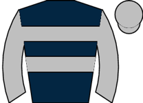 Sherborne ◆ 2 ▼ easy trk ▼ cls | 3.00 | - | 2-3-1-1-4-5 | trk✓ | 119 ↑ | 69 | ★★★☆☆ | Prominent, not fluent 8th, ridden and in touch with leader 3 out, soon weakened | ||
| 1 | 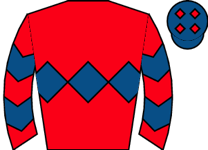 Charles Ritz ◆ 1 M2 ▼ easy trk ▼ cls | 4.00 | - | --2-1-4-3-5 | going✓ trk✓ | 120 | 92 | ★★★★★ | Mid-division, chased leaders before 7th, lost ground 5 out and pushed along, dropped away | ||
| 2 | 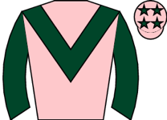 Fern Hill ⚠ ground | 4.50 | - | 2-5-4-2-3-7 | 1r | trip✓ trk✓ | 108 | 40 | ★★★★☆ | In touch with leaders, ridden before 3 out, weakened 2 out | |
| 3 | 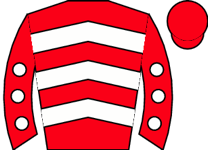 Escaria Ten ▼ easy trk ⚠ IRE form | 6.00 | - | 15-----3-4-3 | trk✓ | 122 ↓ | 65 | ★★★☆☆ | Mid-division, 5th halfway, 3rd at 19th, disputed lead next and led 3 out, pushed along bef | ||
| 5 | 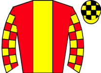 Onemorefortheroad ◆ 3 ▼ cls | 7.00 | - | 5-2-4---2-6 | trk✓ | 118 ↓ | 52 | ★★★☆☆ | Prominent, led 3rd, headed next, not fluent 4 out, lost second before 2 out, weakened befo |
| Res | Horse | Price | BSP | Dr | Form | Crse | Suit | OR | Spd | TF | Last comment |
|---|---|---|---|---|---|---|---|---|---|---|---|
| 1 | Teorie ⚠ ground | 2.75 | - | 5-6-5-6-7-6 | 94 ↓ | 52 | ★★★★★ | Prominent, pushed along after 2 out, weakened quickly before last | |||
| 4 | 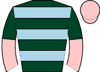 Bread And Butter ◆ 2 M2 ⚠ ground | 3.75 | - | 4-8-5-6-4-2 | trip✓ trk✓ | 81 ↓ | 73 | ★★★★☆ | Close up, led approaching 2 out, headed just after 2 out, ridden and no extra flat | ||
| 2 |  Ocean Heights ◆ 1 ▲ cls Ocean Heights ◆ 1 ▲ cls | 4.00 | - | 3-2-7-1-4-4 | going✓ trk✓ | 92 ↓ | 66 | ★★★★☆ | Mid-division on inside, took keen hold, headway over 2f out, went fourth over 1f out, kept | ||
| 3 | 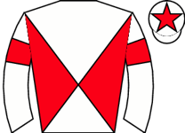 Watchoutitscookie ◆ 3 ⚠ ground | 8.00 | - | 7-11-3-3-7-- | trk✓ | 73 ↓ | 57 | ★★★☆☆ | Held up in touch, mistake 2nd, dropped to last and pushed along after 4 out, tailed off wh | ||
| 5 | 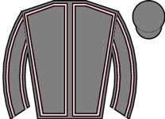 U Asking Me ⚠ ground ⚠ IRE form | 15.00 | - | 7---12-8---8 | 79 ↓ | - | ★★☆☆☆ | Rear of mid-division, pushed along after 3 out and no impression approaching straight, no | |||
| 0 | 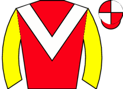 Bargain Hunter ⚠ ground | 17.00 | - | 5-7-8-9-11-- | 1r | 72 | 51 | ★☆☆☆☆ | Wore hood to post, held up in rear, ridden after 3 out, soon no threat, pulled up before 2 |
⚠ limited form — likely skip
| Res | Horse | Price | BSP | Dr | Form | Crse | Suit | OR | Spd | TF | Last comment |
|---|---|---|---|---|---|---|---|---|---|---|---|
| 2 |  Seven Stars ◆ 1 ▼ cls Seven Stars ◆ 1 ▼ cls | 1.73 | - | 3-3-1-6 | trip✓ trk✓ | 82 | ★★★★★ | Midfield, ridden and outpaced over 2f out, kept on steadily final furlong | |||
| 4 | 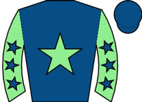 Dancing Dame ◆ 2 ★ EYE ⚠ ground | 3.50 | - | 12-8-6-2-5-1 | 1r 1W | trip✓ trk✓ | 105 | 55 | ★★★★☆ | Took keen hold, held up in rear, ridden and in touch with leaders 2 out, edged left and le | |
| 1 | 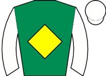 Marvelous Dragones ⚠ ground ▼ cls | 8.00 | - | 10-16 | 47 | Mid-division, pushed along and weakened over 3f out | |||||
| 5 |  Potters Angeltiers ◆ 3 ▼ cls Potters Angeltiers ◆ 3 ▼ cls | 13.00 | - | 10-7-3-6 | 1r 1p | trk✓ | 58 | ★★★☆☆ | Led, pushed along when headed inside 3f out, outpaced by leading trio over 1f out, weakene | ||
| 3 |  Chloe's Courage ▼ easy trk ▲ cls Chloe's Courage ▼ easy trk ▲ cls | 34.00 | - | 4-3-4-3-4-6 | trk✓ | 75 | ★★☆☆☆ | Keen towards rear, ridden over 2f out, soon headway to pass beaten rivals, kept on but alw | |||
| 7 |  Rose Of Knocknamoe ⚠ ground Rose Of Knocknamoe ⚠ ground | 34.00 | - | 6-7-- | 58 | ★★☆☆☆ | Keen, midfield, fell 3 out | ||||
| 6 | 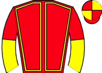 Assured ▲ cls | 67.00 | - | 6-10-5-5-9-8 | 69 | ★☆☆☆☆ | Slowly into stride, towards rear, headway 6f out, weakened over 1f out |
⚠ limited form — likely skip
| Res | Horse | Price | BSP | Dr | Form | Crse | Suit | OR | Spd | TF | Last comment |
|---|---|---|---|---|---|---|---|---|---|---|---|
| 0 | 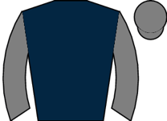 Cap Ricochet ◆ 1 ★ EYE ▼ easy trk | 2.00 | - | 2-4-10-8-1-1 | going✓ trk✓ | 95 | 66 | ★★★★★ | Led, headed 4 out, led again before 3 out, joined 2 out, headed narrowly before last, kept | ||
| 0 |  Helios Allen ◆ 3 ▼ easy trk Helios Allen ◆ 3 ▼ easy trk | 5.00 | - | 6-5-2-2-3-4 | going✓ trip✓ trk✓ | 74 ↓ | 52 | ★★★★☆ | Mid-division, headway to chase leader after 4 out, ridden after 3 out, not fluent 2 out an | ||
| 0 |  Blackijo Dagrostis Blackijo Dagrostis | 7.00 | - | 4-3-4-3-6-- | trk✓ | 76 | 60 | ★★★☆☆ | Raced in second early, dropped to last before 4th, four lengths detached after 8th, pushed | ||
| 0 |  Walk The Plank Walk The Plank | 8.00 | - | --1-4-5-8-3 | 1r 1W | going✓ trk✓ | 74 | 64 | ★★★☆☆ | Held up in touch, not fluent 3rd, mistake 9th and soon pushed along, third after next, jum | |
| 0 | 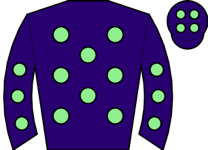 Eastern Shores | 9.00 | - | 3-2-5-6-7-- | 2r 1p | trk✓ | 90 ↓ | 50 | ★★★☆☆ | Held up in rear, headway before 4 out, ridden after 3 out, soon weakened, pulled up before | |
| 0 |  Mountain Port ◆ 2 ⚠ ground Mountain Port ◆ 2 ⚠ ground | 21.00 | - | 7-7-14-4-12-6 | 100 ↓ | 74 | ★★☆☆☆ | Led narrowly, headed and pressed leader after 3 out, ridden and weakened before last |
| Res | Horse | Price | BSP | Dr | Form | Crse | Suit | OR | Spd | TF | Last comment |
|---|---|---|---|---|---|---|---|---|---|---|---|
| 0 |  Latin ◆ 1 ▼ easy trk Latin ◆ 1 ▼ easy trk | 2.75 | - | 4-4-4-7-2-2 | going✓ trip✓ trk✓ | 102 | 71 | ★★★★☆ | Raced keenly, mid-division, headway home turn after 3 out, pressed leader 2 out and every | ||
| 0 | Can't Resist It M2 ▼ cls | 3.75 | - | 2-15-5-4-4-3 | going✓ trk✓ | 104 ↓ | 47 | ★★★☆☆ | Held up in rear, headway when not fluent 4 out, went third before last, weakened flat | ||
| 0 |  Bright Legend ⚠ ground Bright Legend ⚠ ground | 4.00 | - | 5-7-8-4-3-8 | trk✓ | 103 ↑ | 83 | ★★★★★ | Midfield, hit 5th, pushed along 2 out, weakened before last | ||
| 0 | 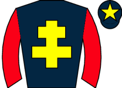 Blackwater Lilly ◆ 2 ▼ cls | 8.00 | - | 6-4-3-5-6-3 | 2r 1p | trk✓ | 90 ↑ | 68 | ★★★☆☆ | Chased leader, ridden before 2 out, not fluent last, kept on one pace run in | |
| 0 |  Westerton ◆ 3 Westerton ◆ 3 | 17.00 | - | --5-5-5---5 | 94 ↑ | 87 | ★★☆☆☆ | In rear, lost touch 2 out | |||
| 0 |  Stopherandgo ▼ cls Stopherandgo ▼ cls | 21.00 | - | 6-9-5-6-8-5 | 1r | 70 ↑ | 59 | ★★☆☆☆ | Held up in rear, headway to chase leaders before 2 out, ridden after 2 out, weakened run i | ||
| 0 |  Polemon Polemon | 34.00 | - | --7-3-----7 | 106 ↓ | 59 | ★★☆☆☆ | Slowly into stride, in rear, ridden and struggling 5f out, soon behind, eased |
| Res | Horse | Price | BSP | Dr | Form | Crse | Suit | OR | Spd | TF | Last comment |
|---|---|---|---|---|---|---|---|---|---|---|---|
| 0 | 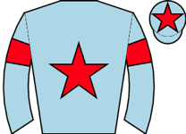 Gallivanted ★ EYE | 3.00 | - | 3-3-1-8-7-2 | 1r 1p | going✓ trip✓ trk✓ | 109 ↑ | 65 | ★★★★★ | Prominent, closed on leaders 3 out, led approaching 2 out, bad mistake last, soon headed, | |
| 0 | 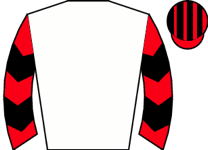 Virtual Rock ◆ 1 M2 ★ EYE ▼ easy trk ▼ cls | 4.00 | - | 1-12-8-1-1-2 | going✓ trip✓ trk✓ | 118 ↑ | 91 | ★★★☆☆ | Led, headed 3 out and ridden, battled on close up, regained lead narrowly last, stayed on | ||
| 0 | 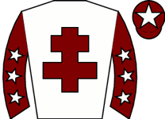 Cayman Dancer ◆ 3 | 5.00 | - | 2-5-1-6-4-1 | trip✓ trk✓ | 110 | 78 | ★★★★☆ | In rear, headway before 2 out where went second on approach, led last, pushed out and read | ||
| 0 | Blues Singer | 6.00 | - | 12-4-3-9-1-4 | 1r 1W | trip✓ trk✓ | 117 | 61 | ★★★★☆ | Prominent, asked for effort after 2 out, held before last | |
| 0 |  Lewisham Grove ◆ 2 ▼ easy trk Lewisham Grove ◆ 2 ▼ easy trk | 9.00 | - | 6-2-2-1-5-2 | trk✓ | 118 ↑ | 76 | ★★★☆☆ | Led, mistake 4th, went two lengths clear 3 out, reduced lead 2 out, headed before last, we | ||
| 0 | 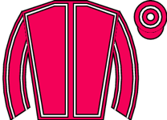 Mister Cessna | 17.00 | - | 1-2-6-4-7-4 | going✓ trip✓ trk✓ | 113 ↓ | 49 | ★★★☆☆ | Raced in third, outpaced 3 out, weakened approaching 2 out, tired jump last, weakened and | ||
| 0 | 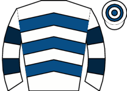 Amalfina ⚠ ground | 34.00 | - | 5-4-3-7-3-7 | trk✓ | 92 | 53 | ★★★☆☆ | Midfield, outpaced from 2 out, weakened after last | ||
| 0 | 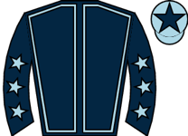 Turn And Finish ⚠ ground | 51.00 | - | 6-2-6-8-8-- | trip✓ trk✓ | 105 ↓ | 69 | ★★☆☆☆ | Always behind, pulled up before 3 out |
⚠ limited form — likely skip
| Res | Horse | Price | BSP | Dr | Form | Crse | Suit | OR | Spd | TF | Last comment |
|---|---|---|---|---|---|---|---|---|---|---|---|
| 1 | Got To Be Real ◆ 2 | 1.73 | - | unraced | - | ||||||
| 2 | Bombus Pascuorum ◆ 1 ⚠ hard trk | 2.38 | - | 4-1 | trip✓ | 52 | Raced in second, dropped to close third before halfway, travelled well when close on leade | ||||
| 4 | 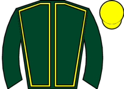 Allez Jacqueline ◆ 3 | 15.00 | - | unraced | - | ||||||
| 3 | 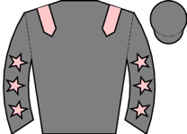 Ezenli | 34.00 | - | 4 | 40 | Raced in third, took second before halfway, lost position when pushed along and outpaced o |
⚠ limited form — likely skip
| Res | Horse | Price | BSP | Dr | Form | Crse | Suit | OR | Spd | TF | Last comment |
|---|---|---|---|---|---|---|---|---|---|---|---|
| 0 | 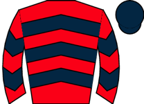 Port Glen One ◆ 1 ▲ cls | 1.33 | - | 1 | going✓ trk✓ | 40 | Disputed lead, led 1st, made rest, not fluent 4 out, jumped left next, hit 2 out and pushe | ||||
| 2 |  Wild Wescht ◆ 2 Wild Wescht ◆ 2 | 5.50 | - | unraced | - | ||||||
| 4 |  Templar Knight ◆ 3 ▲ cls Templar Knight ◆ 3 ▲ cls | 8.00 | - | 6 | 1r | 57 | Edgy in preliminaries and led into start, held up in rear, ridden over 2f out, kept on one | ||||
| 3 |  Storm Dudley ⚠ hard trk ⚠ ground ▲ cls Storm Dudley ⚠ hard trk ⚠ ground ▲ cls | 26.00 | - | 8 | 40 | Chased leaders, pushed along and weakened 3f out | |||||
| 1 | 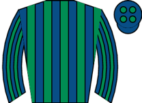 Unknown Stranger ⚠ hard trk ▲ cls | 101.00 | - | --- | 62 | Always behind, pulled up after 3 out |
| Res | Horse | Price | BSP | Dr | Form | Crse | Suit | OR | Spd | TF | Last comment |
|---|---|---|---|---|---|---|---|---|---|---|---|
| 1 | 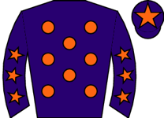 Kamille Au Kanada ◆ 1 | 3.25 | - | 4-2-1-5-1-1 | trip✓ trk✓ | 108 | 64 | ★★★★☆ | Made all, went clear before last, very easily | ||
| 3 | Ride Like A Girl ◆ 2 M2 | 3.75 | - | 4-1-2-2-1-2 | going✓ trk✓ | 108 ↑ | 58 | ★★★★★ | Soon raced in close second, led 3rd, ridden when headed last, kept on but no impression on | ||
| 4 | 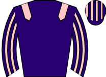 Reel Orange ▲ cls | 5.00 | - | 4-1-2-1-4-1 | going✓ | 99 ↑ | 52 | ★★★☆☆ | Prominent, not fluent 1st, disputed lead 2nd, ridden to lead outright approaching 2 out, s | ||
| 2 | 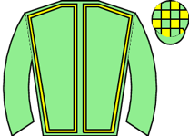 Miss Carbo | 5.50 | - | 5-7-6-1-5-4 | trip✓ | 107 | 44 | ★★★☆☆ | Held up in rear, ridden and outpaced after 3 out, went fourth before last, kept on, neares | ||
| 0 |  Basilette ◆ 3 ★ EYE ▲ cls Basilette ◆ 3 ★ EYE ▲ cls | 6.50 | - | 3-2-2-1-3-1 | 102 ↑ | 74 | ★★★☆☆ | Midfield, in touch with leaders 3 out, going okay but not fluent 2 out, ridden and headway |
| Res | Horse | Price | BSP | Dr | Form | Crse | Suit | OR | Spd | TF | Last comment |
|---|---|---|---|---|---|---|---|---|---|---|---|
| 0 | 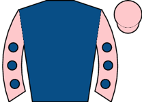 Zaraquelle ◆ 1 | 3.00 | - | 2-3-1-8-2-4 | going✓ | 90 ↑ | 70 | ★★★★☆ | Took keen hold, midfield, dropped to rear before 4th, some headway 3 out, ridden before 2 | ||
| 0 | 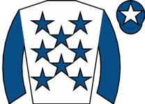 Diamond Days ◆ 3 M2 | 6.00 | - | 4-5-5---4-- | 2r | 84 ↓ | 66 | ★★★★☆ | Close up, fell 1st | ||
| 0 |  Foinix ▲ cls Foinix ▲ cls | 6.50 | - | 2-1-7-4-2-10 | 2r 1W | trk✓ | 79 ↑ | 87 | ★★☆☆☆ | Slowly into stride, towards rear, ridden and kept on one pace from over 1f out | |
| 0 | Castle Quarter ◆ 2 | 7.00 | - | 10-5-3-10-2-3 | going✓ trip✓ | 82 ↑ | 53 | ★★★☆☆ | Prominent, mistake 3 out, no impression on winner last, lost second flat | ||
| 0 |  Western Soldier Western Soldier | 7.00 | - | --4-5---4-5 | 82 ↓ | 59 | ★★★★★ | In rear, not fluent 5th, headway before 3 out, outpaced before next, plugged on flat | |||
| 0 | 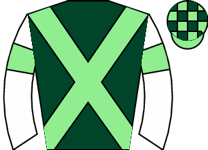 Most Wanted ⚠ ground | 11.00 | - | 3-7-2-5-9-3 | 81 ↓ | 50 | ★★★☆☆ | Led, went right 6th, not fluent 4 out, mistake 3 out, headed approaching 2 out, mistake 2 | |||
| 0 | 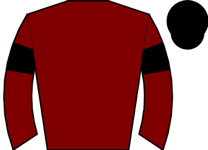 Dotties Star | 15.00 | - | 1-7-10-5-10-5 | 2r 1W | trk✓ | 86 ↑ | 78 | ★★★☆☆ | In rear, mid-division 5th, pushed along after 3 out, faded 2 out | |
| 0 | 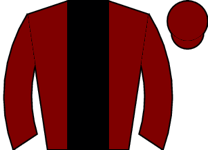 Raffles Nobu | 15.00 | - | 3-5-2-5-7-7 | going✓ | 87 | 51 | ★★★☆☆ | Mid-division, headway 3 out, weakened after next | ||
| 0 | 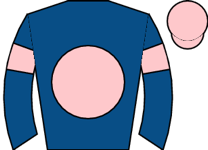 Play On Court | 34.00 | - | 6---4-6-7-7 | 90 | 54 | ★★☆☆☆ | Held up in rear, ridden and no impression 3 out |
| Res | Horse | Price | BSP | Dr | Form | Crse | Suit | OR | Spd | TF | Last comment |
|---|---|---|---|---|---|---|---|---|---|---|---|
| 0 | Cinnodin ◆ 3 ★ EYE | 2.62 | - | 1-2---10-4-1 | going✓ trip✓ | 104 | 64 | ★★★★☆ | Ran in snatches, led after 2nd, headed 3rd, chased leader and outpaced 3 out, three length | ||
| 0 | 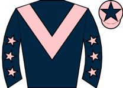 Betty's Tiara ◆ 1 M2 ▼ cls | 3.50 | - | 9-8-1-5-2-3 | going✓ trip✓ | 103 | 70 | ★★★☆☆ | Led, slow 1st, briefly pressed for lead after 4th, ridden and a length ahead 2 out, headed | ||
| 0 | 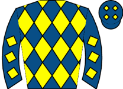 Robber's Bridge ◆ 2 ▼ cls | 4.50 | - | 2-3-3-1---5 | going✓ trk✓ | 105 ↑ | 77 | ★★★☆☆ | Mounted on course and taken down early, rear of midfield, chased leaders 3 out, ridden 2 o | ||
| 0 |  Sailing By Sailing By | 5.00 | - | 7-7-4-4-7-4 | 87 | 55 | ★★★★★ | Held up in mid-division, effort before 3 out, outpaced 2 out, pecked last, weakened flat, | |||
| 0 | Lord Of All Saints | 6.00 | - | --13-7-7---6 | 102 ↓ | 62 | Held up in rear, mistake 2nd, some headway 3 out, chased leaders 2 out, ridden before last | ||||
| 0 | 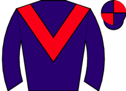 One Cool Dreamer | 34.00 | - | 4-7-6-6-12-10 | 91 ↑ | 64 | ★★☆☆☆ | Mid-division, pushed along and weakened before 3 out |
| Res | Horse | Price | BSP | Dr | Form | Crse | Suit | OR | Spd | TF | Last comment |
|---|---|---|---|---|---|---|---|---|---|---|---|
| 0 |  Rebel Tribesman ◆ 1 ★ EYE ▼ cls Rebel Tribesman ◆ 1 ★ EYE ▼ cls | 2.38 | - | 1-2-1-3-2-1 | going✓ trip✓ trk✓ | 116 ↑ | 77 | ★★★★☆ | Chased leaders, not fluent 6th, pushed along and went second before 3 out where led, ridde | ||
| 0 | 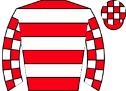 Spike Jones M2 | 4.50 | - | 2-3---7-4-7 | 1r 1p | trip✓ trk✓ | 110 | 69 | ★★★★★ | Always in rear, tailed off before 2 out | |
| 0 | D'jo Dela Barriere ▲ cls | 5.50 | - | 1-5-5-6-5-1 | 104 ↓ | 57 | ★★★☆☆ | Held up towards rear, headway after 2 out, soon went second, led last, stayed on, clear to | |||
| 0 |  Secret Trix ◆ 3 ★ EYE Secret Trix ◆ 3 ★ EYE | 8.50 | - | 3-3-2-2-4-4 | going✓ trip✓ | 116 | 56 | ★★☆☆☆ | Wore hood to start, led, bumped 1st, headed 2nd, prominent, outpaced 4 out, soon dropped t | ||
| 0 |  That's It Paddy ⚠ IRE form That's It Paddy ⚠ IRE form | 9.00 | - | 6-4-6 | 111 | 45 | ★★★☆☆ | Held up in midfield, not fluent 3rd, ridden and minor headway 2 out where not fluent, kept | |||
| 0 | 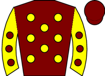 Lacrima ◆ 2 | 13.00 | - | 8-4-5-1-4-5 | going✓ trip✓ | 106 ↓ | 71 | ★★☆☆☆ | In touch in rear on outside, not fluent 1st, closed 8th, weakened after 3 out |
Decision support, not betting advice. Prices are forecast/early —
check the live market. Speed figures are final-time only (no sectionals), so weigh
them with your own read on how a race was run.